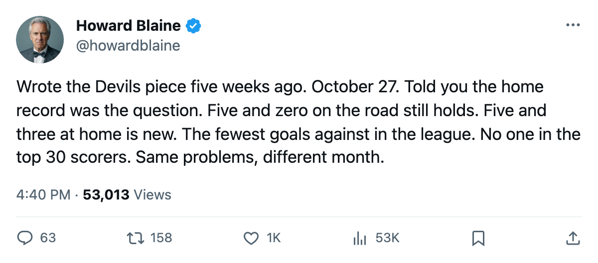
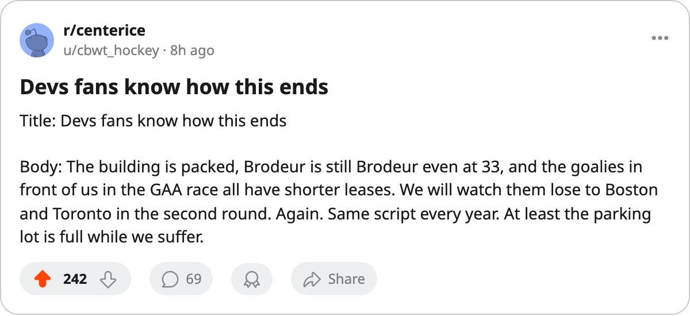

The Inversion Corrected: New Jersey Is 5 and 0 on the Road, 5 and 3 at Home, and Has Given Up the Fewest Goals in Hockey
The October piece said the Devils could not win at home. Five weeks and six games later, the home record reads 5 and 3, the road one is still perfect, and Martin Brodeur has the fourth-best goals-against average in the league.
 Howard BlaineSenior writer, The Blaine Rankings · The Hockey Gazette
Howard BlaineSenior writer, The Blaine Rankings · The Hockey Gazette
On October 27, this paper wrote that the  New Jersey Devils Devils had won every road game and lost every home one. Four and none on the road, none and two at home. The piece noted that the club with the second-highest prestige in hockey had no name among the top 30 scorers, and that the contract cliff underneath the record was the only thing worth watching. Five weeks, six games and one later: the road perfection holds at 5 and 0, the home record reads 5 and 3, and
New Jersey Devils Devils had won every road game and lost every home one. Four and none on the road, none and two at home. The piece noted that the club with the second-highest prestige in hockey had no name among the top 30 scorers, and that the contract cliff underneath the record was the only thing worth watching. Five weeks, six games and one later: the road perfection holds at 5 and 0, the home record reads 5 and 3, and  Martin Brodeur93 sits at a 1.91 goals-against average in 11 starts.
Martin Brodeur93 sits at a 1.91 goals-against average in 11 starts.
The Devils are 8 and 2 and 1 in 13 games, the fewest any club in the league has played. They sit 6th in the Eastern conference at 21 points, 3 ahead of the 8th-place  Philadelphia Flyers Flyers, who have played two more games. The 69 remaining games put the playoff line inside arithmetic reach, and the 2-game deficit against the cut line is a cushion most clubs in this conference would trade for.
Philadelphia Flyers Flyers, who have played two more games. The 69 remaining games put the playoff line inside arithmetic reach, and the 2-game deficit against the cut line is a cushion most clubs in this conference would trade for.
The goals against and who stops them
The Devils have allowed 28 goals in 13 games. No other club in the league has given up fewer. The  Columbus Blue Jackets Blue Jackets, at 16 games, sit at 31.
Columbus Blue Jackets Blue Jackets, at 16 games, sit at 31.  Toronto Maple Leafs Toronto, at 17, sits at 32. New Jersey has been the hardest club to score against since the season opened, and has done it on the least schedule.
Toronto Maple Leafs Toronto, at 17, sits at 32. New Jersey has been the hardest club to score against since the season opened, and has done it on the least schedule.
Most of the 28 comes down to the goaltending. Brodeur, at 33, is 9 and 2 with no shutouts in 11 starts, a 1.91 goals-against average and a 0.908 save percentage. His Book grade is 93, two below his base of 95. His contract pays $6.70M with 3 years remaining. He is one of three goaltenders in the league at 93 or above, alongside  Marty Turco97 of
Marty Turco97 of  Dallas Stars at 95 and
Dallas Stars at 95 and  Roberto Luongo95 of Toronto Maple Leafs at 95.
Roberto Luongo95 of Toronto Maple Leafs at 95.
Brodeur's 1.91 is the fourth-best among goaltenders with 5 or more starts.  Pascal Leclaire91 leads at 1.55 in 10 starts, followed by Luongo at 1.69 in 7 and Turco at 1.84 in 15. Brodeur is ahead of every other goaltender with 11 or more starts.
Pascal Leclaire91 leads at 1.55 in 10 starts, followed by Luongo at 1.69 in 7 and Turco at 1.84 in 15. Brodeur is ahead of every other goaltender with 11 or more starts.
What 13 games have not answered
The October piece identified a scoring problem. The top 30 scorers in the league carry no Devils name. Five weeks on, the sheet confirms it.  Jamie Langenbrunner86 is the highest-graded forward on the roster at 86, and he has not cracked the top 30.
Jamie Langenbrunner86 is the highest-graded forward on the roster at 86, and he has not cracked the top 30.  Patrik Elias86 sits at the same overall grade. Neither has a point total that places inside the league's top 30.
Patrik Elias86 sits at the same overall grade. Neither has a point total that places inside the league's top 30.
The Devils have scored 41 goals against 28 allowed, a differential of 13 across 13 games. They win low-scoring contests because they limit what reaches Brodeur and because he stops what does. The 3-game win streak that currently runs is the second of the season; the first lasted three as well, in early November. The club has not gone longer than 3 without losing in regulation.
The conference, 3 points deep
The Eastern conference from 4th through 8th is separated by 4 points.  Boston Bruins Boston sits 4th at 22. New York Islander and New Jersey and
Boston Bruins Boston sits 4th at 22. New York Islander and New Jersey and  Tampa Bay Lightning Tampa Bay all sit at 21. Philadelphia, the 8th club, is at 18 with 15 games played. The club with the fewest goals against has played the fewest games in the league, which is either an advantage or a problem depending on how the schedule falls between now and April.
Tampa Bay Lightning Tampa Bay all sit at 21. Philadelphia, the 8th club, is at 18 with 15 games played. The club with the fewest goals against has played the fewest games in the league, which is either an advantage or a problem depending on how the schedule falls between now and April.
| Club | GP | Pts | GA | Left |
|---|---|---|---|---|
| Boston Bruins | 16 | 22 | 37 | 66 |
| New Jersey Devils | 13 | 21 | 28 | 69 |
 New York Islanders New York Islanders | 17 | 21 | 45 | 65 |
| Tampa Bay Lightning | 16 | 21 | 41 | 66 |
| Philadelphia Flyers | 15 | 18 | 38 | 67 |
New Jersey's 28 goals against is the lowest figure in the table, and its 69 remaining games the highest. The Devils are the team that has been tested the least and the team that has allowed the least.
The business underneath
The payroll is $58.50M, 13th in the league. At $2.79M per point, the Devils rank 8th in cost-per-point among all 30 clubs. Profit per game is $30.26M, the highest in hockey. Attendance is 16,801 at $82 a ticket. The prestige figure of 1,082 trails only Toronto Maple Leafs Toronto's 1,118. The building is full and the margin is wide, but the top 30 scorer is still missing.
Brodeur's deal runs 3 more years at $6.70M. That is $6.70M of a $58.50M payroll on a goaltender who is 33 and whose Book grade is 2 below his base. The club has room to add a top-six forward who can sustain a 90-plus scoring pace, and has not done so. The October piece said the record was a question of whether the scoring arrived or the goaltending held. Through 13 games, the goaltending has held and the scoring has not arrived.
The next three
 Montreal Canadiens Montreal visits the Devils' calendar tonight, November 16, the first meeting of the season. Buffalo comes to the rink on November 19. Then
Montreal Canadiens Montreal visits the Devils' calendar tonight, November 16, the first meeting of the season. Buffalo comes to the rink on November 19. Then  New York Rangers New York arrives on November 21. Two of the three are on the road, where the Devils have not lost. The road perfection has survived five tests against clubs that range from first in the Atlantic to 11th in the conference. The sixth test is Montreal, a club at 4 and 6 and 3 with 15 points, 1 and 4 at home.
New York Rangers New York arrives on November 21. Two of the three are on the road, where the Devils have not lost. The road perfection has survived five tests against clubs that range from first in the Atlantic to 11th in the conference. The sixth test is Montreal, a club at 4 and 6 and 3 with 15 points, 1 and 4 at home.
The inversion that defined October is gone. The Devils win at home now, just not at the rate they win away. The question this paper asked five weeks ago was whether the road record was real or a small-sample fluke that would collapse once the schedule turned home-heavy. It has not collapsed, and the numbers through 13 read road 5 and 0, home 5 and 3, fewest goals against in hockey, and still no top 30 scorer.
Brodeur told no one anything this fortnight that changes the arithmetic. He is 9 and 2, his grade is 93, his deal has 3 years left, and the club in front of him in the conference is separated by 8 points with two fewer games played. Eight points in November means nothing in April, but 28 goals against in 13 is the fewest the Bureau has produced this season.

